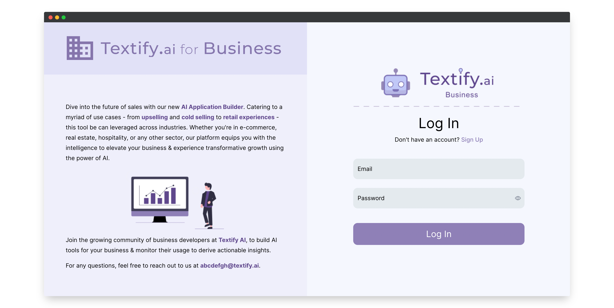
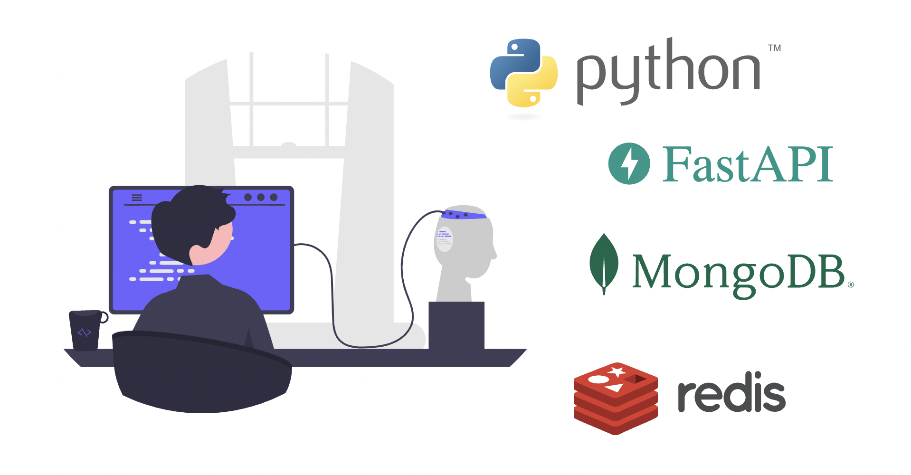

Experience
A reverse-chronological overview of my industry experience across software development, backend engineering, AI, and data-driven projects.
Textify Analytics
Formerly Textify AI, Registered as CRCJ Technologies Private Limited
(Remote) Indore, Madhya Pradesh, India · Dec 2022 - Jul 2026
Software Development Engineer 2 (SDE-2)
Apr 2026 - Jul 2026
Tech Stack: Python, FastAPI, MongoDB, Redis, Firebase, Amazon SES, S3, EC2, Voice AI & Telephony
Traveltalk24: AI-assisted itinerary generation for your next trip
- Re-factored back-end infra to automatically deploy newly submitted apps using dynamically created objects
Software Development Engineer 1 (SDE-1)
Apr 2023 - Mar 2026
Tech Stack: Python, FastAPI, JavaScript, Node.js, MongoDB, Redis, Supabase, Azure VMs, Document Intelligence API
Analytx: RAG-based charts search platform
-
Developed a RAG-based charts search engine using Azure OpenAI API, MongoDB Atlas vector search, LangChain, to retrieve relevant charts, matching user query, from a database of 2 million+ charts.
-
Architected an automated data collection and transformation pipeline using Azure Document Intelligence API and OpenAI Batch API, cutting costs by 50% by shifting from immediate to asynchronous processing.
-
Engineered a suite of XGBoost models to predict news-success indicators, with MLflow-driven tracking, Docker-based deployment, and capabilities for real-time single-point inference and asynchronous batch inference.
-
Configured auto-deployments for multiple Python-FastAPI backend APIs to Azure VMs using GitHub Actions CI/CD, with basic Nginx reverse-proxy configuration to serve production websites.
-
Successfully migrated test and production deployments for multiple backend platforms from Azure to GCP, across our core product as well as separate client projects
Textify AI App & Builder Platform: Web platform for building no-code AI mini-apps
-
Optimized app platform homepage load times by implementing Redis-based caching for personalized and non-personalized app recommendations serving 20,000+ users across categories including Top, New, Discover Peer Favourites, You Might Also Like, and Textify Curated.
-
Re-architected app execution from individual endpoints per app to a single reusable endpoint, dynamically resolving the app and user tier from each request, fetching its prompts and developer-configured data, and assembling the required context at runtime to generate the app-specific response.
-
Designed a tiered response architecture using Redis and Python RQ, asynchronously queueing requests for regular users while bypassing the queue for Pro users; implemented real-time, end-to-end streaming of text responses from OpenAI through our backend server to the client for Pro users, reducing time to first token by an estimated 60% compared with waiting for the complete response.
-
Built a data-integrated AI builder that lets developers enrich AI-generated responses with their own files (PDF, DOCX, TXT, MD) and outputs from a curated catalogue of 50+ third-party APIs, dynamically combining this data with user inputs within predefined prompts to generate richer, more current responses at runtime.
-
Added a modular AWS S3 storage layer for managing user and developer files, app animations, icons, and other application-level assets across separate buckets.
-
Integrated rich-output capabilities, including top-N image triggering based on developer-defined keywords using in AI-generated responses and customizable Markdown/HTML/CSS templates injected into system prompts to control output structure.
-
Supported biweekly hackathons by preparing workshop slide decks, building detailed submission forms, and reviewing app submissions from college students.
-
Designed dashboard app cards, alert screens, custom app UIs, pop-up forms in Figma

Software Development Intern
Dec 2022 - Mar 2023
Tech Stack: Python, Flask, MongoDB, Redis, Hugging Face, scikit-learn
Textify AI App Platform (Initial Phase)
-
Built API endpoints to implement app-specific request queueing using SSE (Server-Sent Events) & Redis
-
Deployed 24 GB GPT-J model with 6 billion parameters on an AWS EC2 instance for classifying complaints
-
Implemented basic CI/ CD pipelines using GitHub Actions for deploying backend APIs.
Client project & demos
-
Built multiple demos for client projects spanning Text summarisation, Translation & Question answering.
-
Prepared technical documentation covering model workflows, APIs, and integration details.
-
Deployed machine learning models as production-ready APIs for client applications.
